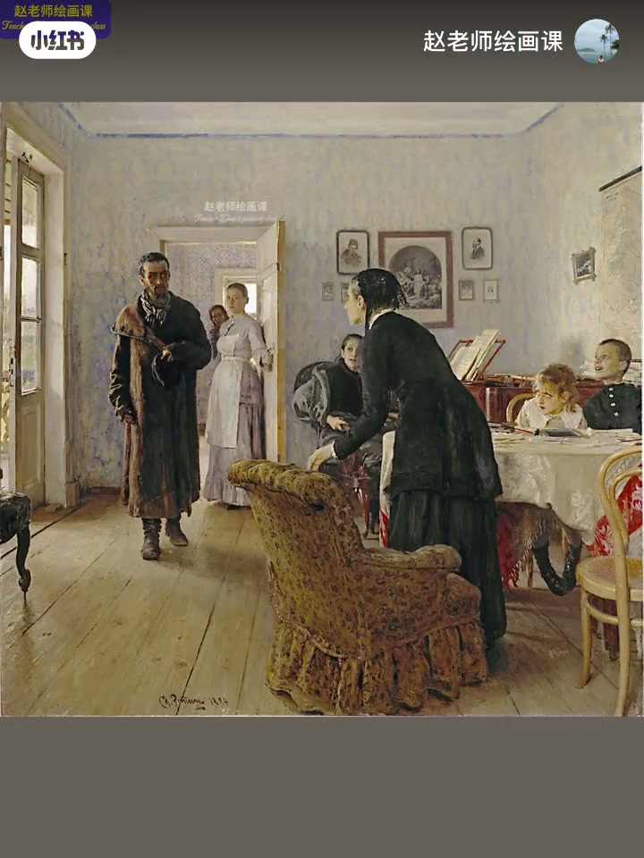
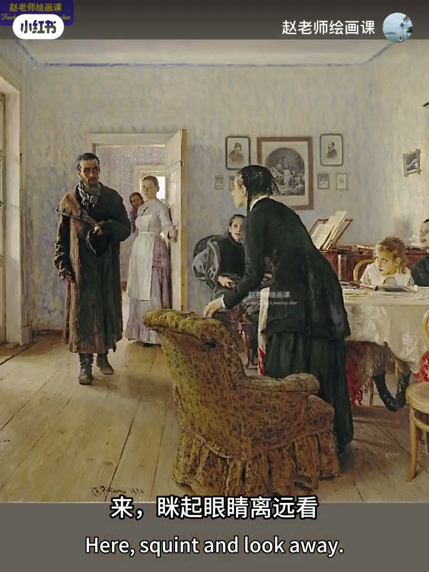
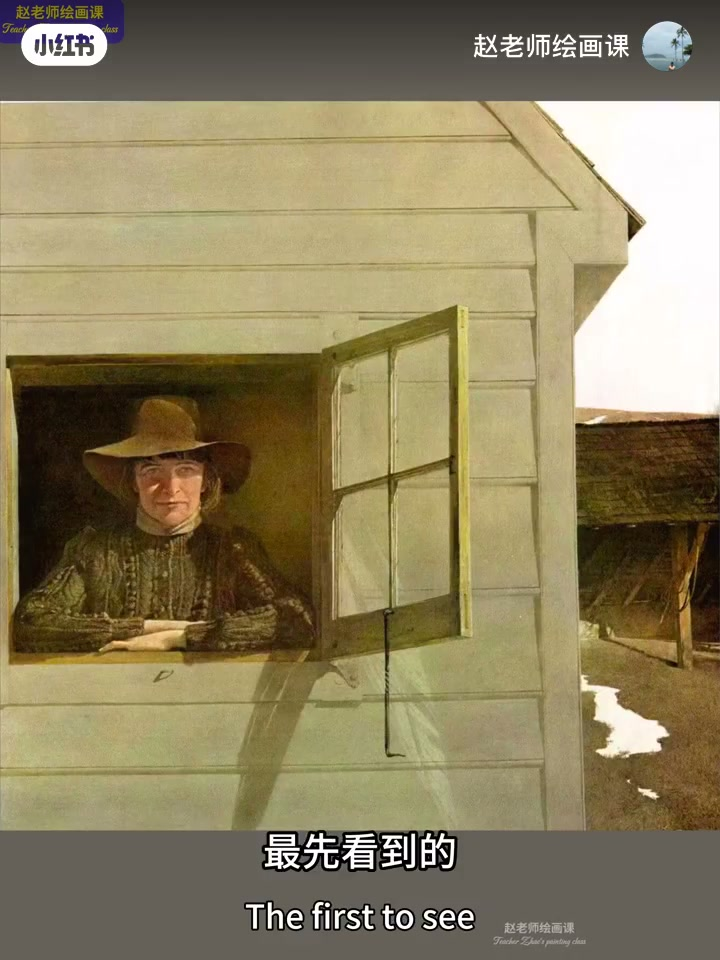
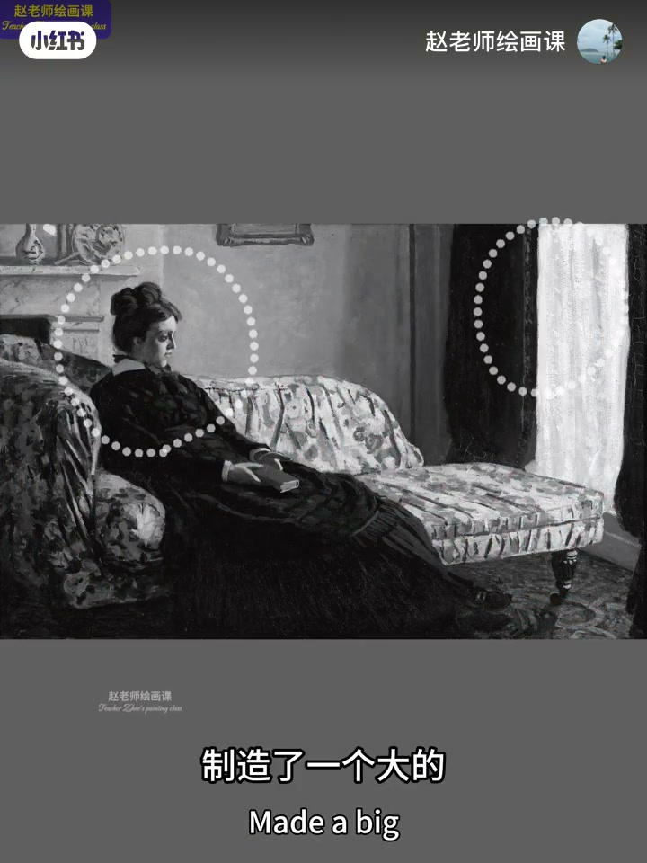
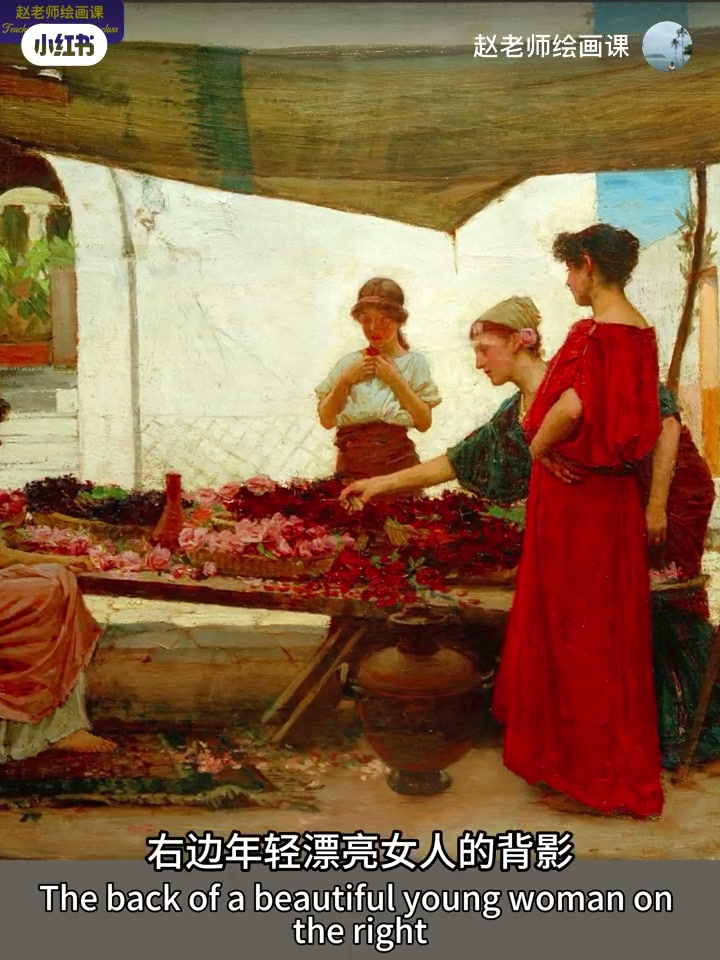

内容要点
画面平淡，往往不是技巧不够，而是没用好视线引导。列宾《意外归来》用明度对比强弱把视线从左推到右，再靠细节与眼神形成循环；怀斯用水平动线稳住平静；莫奈用明度加大椭圆、彩度红点收束；沃特豪斯则用纯度渐变与色相偏移，把鲜红焦点温柔送到左侧再拉回。主观用色的答案之一：研究色块构成。
知识结构
重色块对比最强→左向右；细节眼神循环。
明度细节从强到弱横向移动；水平＝平静。
大明度动线＋红物件彩度呼应成椭圆。
纯度渐变与色相偏移导视线，再拉回主角。
视线引导＝安排对比强弱与色块路径：先定主落点，再用递减对比与呼应色把眼睛带走又送回。
00:00-01:14列宾：明度对比制造主视线
开场对比平淡习作与大师抓眼：抛开技巧，关键在视线引导。列宾《意外归来》里流放者推门，家人欢喜、质疑、戒备溢出画面——他如何操控视线？
闭眼退远：眼睛不由自主从左向右。男人重色块与背景明度对比最强，母亲稍弱，孩子最弱，利用强度感知制造主引导；鞋子、挂画、门框、远处仆人与妻子连同眼神动作，再织出循环动线，把人带进剧情。00:16／00:36／00:54 是证据链。


01:14-01:37怀斯：水平动线强化平静
怀斯作品中最先落到左边窗里的女人，再落到右边草屋。画家用明度与细节对比从强到弱，引导视线横向移动。
水平动线带来平和心理感受，极大加强平静、真实、质朴的情绪。01:18 高对比窗内人物是第一落点。

01:37-02:17莫奈：明度＋彩度椭圆动线
莫奈早年人物画尚无鲜明印象派风格，构成意识已惊人：女人与右侧窗帘靠明度对比造出由左向右的大动线。
红领结、手中红书、右下红地毯，再加画框与左上静物，让动线收成椭圆，安静深沉的思绪氛围被推到高潮——明度与彩度共同作用的视线引导。01:54 可指认。

02:17-03:16沃特豪斯：纯度渐变与色相偏移
沃特豪斯市集中，右侧年轻女人背影因鲜红与清晰轮廓成焦点。为免右侧过重失衡：从鲜红衣到中间红花，再到左边偏橙的红，用缓和纯度渐变与色相偏移把视线送到左侧，再靠上方色块拉回女主角。
收束：主观用色答案之一是抛弃像与不像，认真研究色块构成；并预告色彩系统课。02:23 鲜红焦点清晰。

完整转录（85段）
以下文本由 Whisper medium 模型自动转录，可能存在少量识别误差，已尽可能修正。
为什么我们的画面总是平淡无奇
而大师作品即精彩好看
又抓人眼球
抛开技巧层面
能否用好视线引导才是关键所在
这是列宾的代表作之一
意外归来
画中流放者推门而入
让气氛瞬间定格
家庭成员的不同反应
让欢喜、质疑、戒备等复杂的情绪溢出画面
列宾是如何操控观众视线的
来,闭起眼睛离远看
我们的视线会不由自主地从左向右
因为男人的重色块与背景明度对比最强
中间的母亲对比稍弱
孩子对比最弱
如此安排利用了人眼强度感知的原理
最终制造了这样的视线引导
女孩鞋子、男孩头顶的挂画、门框
远处仆人和妻子这些细节
连同人物眼神动作
也形成了另外两条视觉动线
如此清新的设计
让观者视线循环往复
完全被带入剧情
这就是视线引导的魔力
在《怀思》的这幅作品中
最先看到的是左边窗户里的女人
然后呢会看到右边的草屋
画家用明度及细节的对比
从强到弱
引导观众视线横向移动
而水平动线带来的平和的心理感受
极大的加强了画面平静、真实
质朴的情绪表达
这是莫奈年轻时的一幅人物作品
可以看出当时的她
还没有形成明显的印象派风格
但是画面的构成意识
依然是天赋非凡的存在
画中女人和右侧窗帘
依靠明度对比
制造了一个大的
由左向右的视觉动线
除此之外
红领结手中的红书
右下角红地毯
还有墙上画框
左上角的静物
让视觉动线形成一个椭圆形
如此使得画面安静
深沉若有琐思的情绪氛围
达到了高潮
这是明度与彩度共同作用
形成的视线引导
最后一幅
在沃特豪斯的这幅作品中
右边年轻漂亮女人的背影
引起鲜艳的红和清晰的轮廓
成为了视觉焦点
画家避免右侧过重
导致不平衡
设计了什么样的视觉引导呢
不难看出
从鲜红的衣服到中间红花
再到左边女人的偏橙的红
画家利用了较为缓和的纯度渐变
和色相偏移
自然而然的将视线引导到左边
又利用上方的色块
把视线拉回
再次回到女主角身上
多么高明的视觉设计啊
很多同学常常问我
老师到底如何主观用色
这不就是答案之一吗
抛弃像与不像
认真研究画面的色块构成
是最行之有效的办法
如何利用正确的训练
掌握这些色彩原理
请关注我6月30号的色彩系统课程
下期见
拜拜